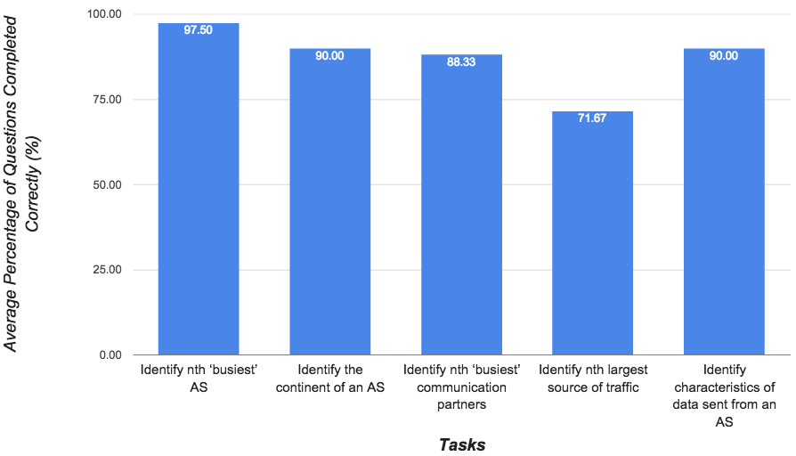
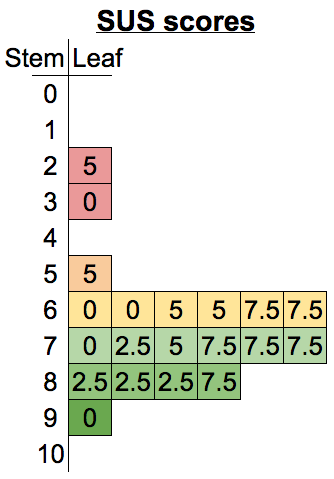

African national research and education networks (NRENs), exchange network data through a variety of collaborative network applications from video conferencing to large research data transfers. Researchers have shown that up to 75% of traffic originated in and destined for these African institutions is routed circuitously through other continents, increasing latencies of network traffic and therefore affecting the collaborative efforts of African NRENs. This circuitous routing can be avoided through peering of NRENs at Internet exchange points (IXPs) in Africa but the managers of the NRENs first need to make an argument for peering to acquire funding and support. Information visualization can be helpful in augmenting cognitive capabilities of professionals these network managers in preparing an argument for peering at African IXPs. Currently there is a lack of research into the use of visualisation tools to assist the network managers and policy makers of African NRENs in this task.
In this project, we designed, implemented and evaluated the AfriNREN Web application – an interactive visualization dashboard intended to help African NRENs identify the biggest communication partners that transfer traffic through their network and the characteristics of that traffic to support their aims of improving network performance for collaborative research and education applications.
The experimental results show that a basic information visualization dashboard successfully assists users in identifying the Autonomous Systems (ASes) that communicate the most through a network; determining the amount of traffic transferred between communicating ASes; identifying which continents these ASes are located on; and determining the type of traffic being sent from large sources of traffic.
The research question here is “can a dashboard of interactive non-geospatial visualizations of NetFlow data effectively communicate network traffic information about a network to the network managers?” The tasks we test to determine the dashboard’s effectiveness are:
To answer the research question, a Web application was built to support the visualisation dashboard and for use in an experiment. Django - a Python Web development framework - was used to created the Web application and D3.js - a JavaScript visualisation framework - was used to create the visualisations. The data being visualised was sourced from an African NREN but the data had been anonymised before we received it.
To evaluate the effectiveness of the non-geospatial dashboard, a user evaluation was conducted. This comprised of a 13-question task completion test to test whether the users of the dashboard could complete the tasks relevant an NREN network manager; the System-Usability Scale questionaire which tested the usability of the dashboard; and 3 open-ended feedback questions to prompt the users to provide constructive feedback and criticism for use in evaluating the dashboard. The evaluation experiment was conducted on 20 student users, in 30-minute sessions hosted in a university computer laboratory. The appropriate ethical clearance was received from the Science Research Ethics Committee and Department of Student Affairs at UCT for using students in our evaluations.
Figure 1: AfriNREN Web Application Dashboard
The final design of the AfriNREN dashboard featured two visualizations as seen in Figure 1. The Figure 2 shows the left panel of the dashboard – titled ‘Busiest AS Communication Partners’ – and features a network graph (node and link diagram) showing the Autonomous Systems (ASes) that have sent and received the most traffic through the NREN as nodes and the links represent the amount of data transferred between each connected node. Each node of the graph can be repositioned by the user and the position of each other node will be recalculated in respect to the changed node. Furthermore, the user can access details of each AS by hovering their mouse over a node in the graph. A tooltip appears over the node with information of the AS’s AS number, the organization’s name, the AS’s country and continent of location, and the number of bytes sent and received as shown in Figure 5. The dataset used to test and develop the dashboard features anonymised data which may have altered the AS mappings. This would affect how accurately the visualization represented the realistic scenario.
The right panel of the dashboard – titled ‘Largest Sources of Traffic’ – gives a row chart displaying the ASes that were the largest sources of traffic sent through the NREN. Each row in the row chart is a separate AS and the AS number can be read on the y-axis by the base of the bar. Each row shows the total traffic in bytes sent from the related AS to all destinations and the total is broken down by the port from which the traffic originated. The port number is linked to the ‘type of traffic’ in the legend on the right panel of the dashboard as seen in Figure 4. Although port numbers do not directly correlate to the traffic type, it is a useful indicator for network managers when analyzing network traffic. Users can access finer-grained detail on the traffic breakdown by hovering their mouse over the sections of a bar in the row chart to show a tooltip containing information of the AS number of the AS from where the data was sent, the port number of the source of the data of the currently selected section, and the total number of bytes of data sent from the selected port of the selected AS.
Figure 2: Node Tooltip in 'Busiest AS Communication Partners' Network Graph
To evaluate the effectiveness of the non-geospatial dashboard, a user evaluation was conducted. This comprised of a 13-question task completion test to test whether the users of the dashboard could complete the tasks relevant an NREN network manager; the System-Usability Scale questionaire which tested the usability of the dashboard; and 3 open-ended feedback questions to prompt the users to provide constructive feedback and criticism for use in evaluating the dashboard.
The evaluation experiment was conducted on 20 student users, in 30-minute sessions hosted in a university computer laboratory. The appropriate ethical clearance was received from the Science Research Ethics Committee and Department of Student Affairs at UCT for using students in our evaluations.
Below are links to the documents and questionaires handed out to the participants.
Download Experiment HandoutThe results show 11 out of the 13 questions (84.6%) in the task completion test had been answered correctly by users with high success rates ( > 80%). These results reflect positively on the usefulness of the dashboard in supporting the tasks given to the users.
The results of the task completion test highlight problems with questions 9 and 10 of the task. Figure 1 shows a 65% and 55% successful completion rate of each question respectively. On inspection of the answers given to question 9, we discovered that 4 of the 7 incorrect answers given (57.1%) were the same. The question was “Which AS is the second largest source of traffic” and although worded correctly, there was no emphasis placed on “source”. If not read correctly, this could lead to the use of the wrong visualization in the dashboard to answer the question. Judging from the results, this was the largest cause of error. The network graph (which shows combined sent and received totals) was incorrectly used to answer the question where the row chart (which shows just the source total) would have given the correct answer. Inspection of the answers given to question 10 revealed that 7 of the 9 incorrect answers (77.8%) were the same. Question 10 was “Which AS is the largest source of HTTPs traffic?” and the most common incorrect answer given was the AS that was the largest source of HTTP traffic. It appears that the largest cause of error for question 10 was a misreading of the question.
These questions are mapped to the “Identify the nth largest source of traffic” and “Identify the type and quantity of traffic sent from an AS” tasks. Analysis of the feedback given in the open-ended feedback questions highlights the theme of confusion over the wording of the questions of the task test, further supporting our theories about the low success rate for questions 9 and 10.
The average SUS score for our usability tests was 68.5. However, as Figure 8 highlights, our results include two concerning scores (25 and 30) which show that our system was rated very poorly by some users. SUS scores can be mapped to a scale of adjectives in order to bring more descriptive meaning to the SUS score given to a system. The average SUS score of our evaluation (68.5) fits the range described by “Good”. However, individual scores in our result set fit the “Poor” description with one of them sitting on the border between “Poor” and “Worst Imaginable”. It is clear that the usability of the dashboard requires further design and implementation iterations based on the current feedback.
Figure 6: Task Completion Test Results
Figure 7: Task Completion Test Results Grouped by Task
Figure 8: Stem and Leaf Plot of SUS Scores
This work set out to answer the research question “can a dashboard of interactive non-geospatial visualizations of NetFlow data effectively communicate network traffic information about a network to the network managers?”. Through a usability evaluation and task completion test, we found that the final design of the dashboard was able to effectively communicate a network’s traffic information to the network managers. The experiment and user feedback showed that features implemented in the AfriNREN dashboard were usable and assisted in the completion of tasks specific to the NetFlow data represented – namely: identifying the Autonomous Systems (ASes) that communicate the most; determining the amount of traffic transferred between communicating ASes; identifying which continents these ASes are located on; and determining the type of traffic being sent from large sources of traffic.
However, the dashboard does not support all the necessary features and tasks as highlighted by the feedback received from users in the user evaluation performed. The dashboard requires additional design efforts to correct the current problems with usability. Furthermore, additional features would have to be designed, implemented and evaluated before the dashboard could be used to determine latency information and network structure between Autonomous Systems traversed by network traffic in Africa.